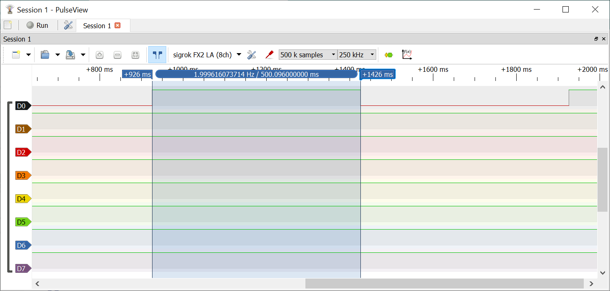

การเขียนโปรแกรมภาษา C สำหรับ AVR (ATmega328P): ตอนที่ 3#
Keywords: Atmel AVR MCU, ATmega328P, Bare-metal C Programming, AVR-GCC, avr-libc
- การเขียนโปรแกรมภาษา C แบบ Bare-Metal และการใช้ไลบรารี avr-libc
- โค้ดตัวอย่างที่ 1: LED Blink
- โค้ดตัวอย่างที่ 2: LED Blink (Timers 0/1/2)
- โค้ดตัวอย่างที่ 3: LED Blink (Timer Overflow Interrupt)
- โค้ดตัวอย่างที่ 4: LED Blink (Watchdog Timer)
▷ การเขียนโปรแกรมภาษา C แบบ Bare-Metal และการใช้ไลบรารี avr-libc#
บทความในตอนที่ 3 สาธิตตัวอย่างการเขียนโค้ดภาษา C เพื่อลองใช้งานวงจรที่เรียกว่า "ไทม์เมอร์" (Timers) ภายในชิป ATmega328P มีการใช้คำสั่งหรือฟังก์ชันของไลบรารี avr-libc (Online User Manual) และใช้ Wokwi Simulator ในการจำลองการทำงานของโค้ดเพื่อตรวจสอบความถูกต้องในเบื้องต้น
คำแนะนำ: ถ้าจะลองโค้ดตัวอย่างโดยใช้ Arduino IDE เพื่อคอมไพล์และอัปโหลดไปยังบอร์ดทดลอง Arduino Uno
หรือ Nano ให้สร้าง Arduino Sketch และทำให้ไฟล์ .ino ไม่มีโค้ดใด ๆ (Empty Sketch)
และให้สร้างไฟล์ main.c เพื่อเขียนโค้ด
▷ โค้ดตัวอย่างที่ 1: LED Blink#
โค้ดตัวอย่างแรกเป็นการทบทวนการใช้คำสั่ง _delay_ms() ของไลบรารี avr-libc
เพื่อใช้ในการหน่วงเวลาการทำงานของซีพียู ก่อนทำคำสั่งถัดไป ฟังก์ชันนี้ทำคำสั่งเพื่อวนซ้ำและหน่วงเวลา
(จึงเรียกว่าเป็น Software-based Delay Function)
ในส่วนที่เป็นขาเอาต์พุต มีการเขียนค่าลงในรีจิสเตอร์ DDRB บิตที่ 5 สำหรับ Arduino D13 Pin (Onboard LED)
และตรงกับขา PB5 ของ ATmega328p
การเขียนค่าบิตเป็น 1 ใน DDRB จะทำให้ขาดังกล่าวเป็นเอาต์พุต
การกำหนดสถานะลอจิกที่ขาเอาต์พุตดังกล่าวทำได้โดยเขียนค่าบิตที่ตำแหน่ง PB5 ใน PORTB
ให้เป็น 1 และ 0 สลับกันไป เว้นระยะเวลาประมาณ 500 มิลลิวินาที
โดยการใช้คำสั่ง _delay_ms() ของไลบรารี avr-libc
เพื่อให้ LED กระพริบได้
// Set the CPU speed to 16MHz if F_CPU is not defined
#ifndef F_CPU
#define F_CPU 16000000UL
#endif
#include <avr/io.h> // required for ATmega328P's macros
#include <util/delay.h> // required for _delay_ms(), _delay_us()
// The delay.h header file contains the _delay_ms()
// function used to generate a delay in milliseconds.
int main(void) {
// Set the LED pin as output
DDRB |= (1 << PB5);
while (1) {
// Toggle the LED by using the XOR operation on the PB5 bit.
PORTB ^= (1 << PB5);
// Delay for 500 msec
_delay_ms(500);
}
return 0;
}
รูป: การเขียนโค้ดแและคอมไพล์ด้วย Arduino IDE และอัปโหลดไปยังบอร์ดไมโครคอนโทรลเลอร์

รูป: การเขียนโค้ดแและคอมไพล์ด้วย Wokwi Simulator และจำลองการทำงานแบบเสมือนจริง
ถ้าต้องการจะลองสร้างฟังก์ชันแทนการใช้ฟังก์ชัน _delay_ms() ที่เรียกใช้จาก <util/delay.h>
ก็มีแนวทางดังนี้
- ฟังก์ชันแรกที่ถูกสร้างขึ้นใหม่คือ
_delay_loop()และทำคำสั่งโดยใช้โค้ดภาษา AVR Assembly (Inline) เพื่อวนซ้ำตามจำนวนรอบที่กำหนด (นับค่าของตัวแปรที่มีขนาด 16 บิต ลดลงครั้งละ 1 จนถึง 0) โดยหนึ่งรอบจะใช้เวลา 4 ไซเคิลของการทำงานโดยซีพียู - ฟังก์ชันที่สองคือ
_delay_loop_ms()ซึ่งจะเรียกฟังก์ชัน_delay_loop()เพื่อให้ทำงานและหน่วงเวลาไว้ ประมาณ 1 มิลลิวินาที และให้วนซ้ำในลูปแบบforเพื่อเรียกฟังก์ชันดังกล่าว ตามจำนวนครั้งที่ตรงกับหน่วยนับเป็นมิลลิวินาที
// Set the CPU speed to 16MHz if F_CPU is not defined
#ifndef F_CPU
#define F_CPU 16000000UL
#endif
#include <avr/io.h> // required for ATmega328P's macros
// 4 cycles per iteration
inline void _delay_loop(uint16_t __count) {
asm volatile (
"1: sbiw %0,1" "\n\t"
" brne 1b"
: "=w" (__count) // Write the value of __count to a register pair.
: "0" (__count) // Use the same register pair as the first operand
);
}
void _delay_loop_ms( uint16_t msec) {
for (uint16_t i=0; i < msec; i++ ) {
_delay_loop( (F_CPU/4)/1000 - 2);
}
}
int main(void) {
// Set the LED pin as output
DDRB |= (1 << PB5);
while (1) {
// Toggle the LED by using the XOR operation on the PB5 bit.
PORTB ^= (1 << PB5);
// Delay for 500 msec
_delay_loop_ms(500);
}
return 0;
}
รูป: การวัดสัญญาณที่ขาเอาต์พุตของบอร์ด Nano โดยใช้อุปกรณ์ USB-based Logic Analyzer

รูป: การแสดงผลรูปคลื่นสัญญาณด้วยซอฟต์แวร์ sigrok-PulseView (แสดงรูปกราฟเพียงหนึ่งช่องสัญญาณ)
จากการวัดสัญญาณเอาต์พุตที่ขา PB5 ของบอร์ด Arduino Nano จะได้ระยะเวลาในการสลับสถานะลอจิกในแต่ละครั้งประมาณ 500 มิลลิวินาที
▷ โค้ดตัวอย่างที่ 2: LED Blink (using Timers 0/1/2)#
ชิป ATmega328P มีวงจรภายในที่เรียกว่า "ไทม์เมอร์" (Timer) หรือวงจรนับตามจังหวะ มีโหมดการทำงานให้เลือกได้หลายแบบ สามารถกำหนดเงื่อนไขให้เกิดเหตุการณ์ที่เรียกว่า "อินเทอร์รัพท์" (Interrupt) เมื่อนับถึงค่าที่กำหนดไว้หรือนับขึ้นค่าสูงสุด แล้ววนกลับมาเริ่มต้นใหม่ที่ 0 รวมถึงการสร้างสัญญาณเอาต์พุต ที่เรียกว่า PWM (Pulse Width Modulation) โดยใช้ไทม์เมอร์ได้สูงสุด 6 ช่องสัญญาณ
วงจร Timer ใน ATmega328P ให้เลือกใช้อยู่ 3 ตัวเลือก คือ
- Timer0 (8-bit): คำสั่ง
millis()ของ Arduino API ใช้ Timer0 ในการทำงาน - Timer1 (16-bit) ใช้สำหรับคำสั่งของไลบรารี
Servoของ Arduino API - Timer2 (8-bit): ใช้สำหรับคำสั่ง
tone()ของ Arduino API
การทำงานของไทม์เมอร์ของชิป AVR มีหลายโหมดให้เลือกใช้งาน เช่น
- Normal Mode: ในโหมดนี้ รีจิสเตอร์ของตัวนับ จะนับขึ้นครั้งละหนึ่ง จาก 0 ไปถึงค่าสูงสุด ตามความถี่ที่ได้กำหนดไว้ ถ้าตัวนับมีขนาด 8 บิต ก็จะนับไปจาก 0 ไปถึง 255 แล้วกลับมาที่ 0 ใหม่ และเรียกกรณีนี้ว่า Timer Overflow และสามารถตั้งค่าให้เกิดอินเทอร์รัพท์ตามเหตุการณ์นี้ได้
- Clear Timer on Compare Match (CTC) Mode: ในโหมดนี้ รีจิสเตอร์ของตัวนับ จะไม่นับถึงค่าสูงสุด แต่จะนับไปถึงค่าที่ได้มีการกำหนดไว้ในรีจิสเตอร์สำหรับการเปรียบเทียบ (Compare Match Register) แล้ววนกลับไปเริ่มใหม่ที่ 0 และสามารถตั้งค่าให้เกิดอินเทอร์รัพท์ตามเหตุการณ์นี้ได้
- Fast PWM mode: โหมดนี้ใช้สำหรับการสร้างสัญญาณ PWM ที่ปรับค่าความกว้างของพัลส์ได้ สร้างได้จำนวน 2 ช่องเอาต์พุตต่อหนึ่งไทม์เมอร์ เหมาะสำหรับการสร้างสัญญาณที่มีความถี่สูง
- Phase Correct PWM Mode: โหมดนี้ใช้สำหรับการสร้างสัญญาณ PWM ได้เช่นกัน แต่ใช้วิธีนับขึ้นไปจนถึงค่าที่กำหนดไว้แล้วนับลงจนถึง 0 ดังนั้นจึงแตกต่างจากโหมด Fast PWM ในรูปแบบการนับ
วงจรไทม์เมอร์มีตัวหารความถี่ (Prescale Factor) ให้เลือกใช้ได้หลายค่า
ได้แก่ 1, 8, 64, 256 และ 1024 เพื่อทำให้การนับเกิดขึ้นในอัตราที่ช้ากว่าความถี่ของซีพียู
ตัวอย่างโค้ดนี้สาธิตการเปิดใช้งานวงจร Timer1 หรือ ไทม์เมอร์หมายเลข 1
และตั้งคาบเวลาให้เกิดอินเทอร์รัพท์ทุก ๆ 0.5 ไมโครวินาที
เมื่อเกิดอินเทอร์รัพท์ ฟังก์ชัน ISR(TIMER1_COMPA_vect) { ... } จะทำงาน
และเพิ่มค่าตัวนับ (ตัวแปรชื่อ ticks) ครั้งละหนึ่ง
ค่าของตัวแปรนี้จะถูกใช้ในการบันทึกเวลาและตรวจสอบเงื่อนไขการอัปเดตสถานะเอาต์พุตของ LED
การตั้งค่าและใช้งาน Timer1 เกี่ยวข้องกับรีจิสเตอร์ เช่น
TCCR1Aเลือกโหมดและตั้งค่าการทำงานของ Timer1TCCR1Bเลือกโหมดและตั้งค่าการทำงานของ Timer1TCCR1Cเลือกโหมดและตั้งค่าการทำงานของ Timer1OCR1Aกำหนดค่าของตัวเลขจำนวนเต็มขนาด 16 บิต เพื่อใช้ในการเปรียบเทียบกับค่าในรีจิสเตอร์ตัวนับของ Timer1TIMSK1เลือกเปิดหรือปิดการเกิดอินเทอร์รัพท์ของวงจร Timer1TCNT1ตัวนับของไทมเมอร์ที่มีขนาด 16 บิต แบ่งเป็นสองส่วนคือTCNT1HและTCNT1Lที่มีขนาดอย่างละหนึ่งไบต์TIFR1มีค่าบิตที่ระบุว่ามีการเกิดอินเทอร์รัพท์ที่เกี่ยวข้อง (Timer1 Interrupt Flags)
ตาราง: ตัวอย่างของรีจิสเตอร์ที่เกี่ยวข้องกับการทำงานของ Timer1 และองค์ประกอบระดับบิตของแต่ละรีจิสเตอร์ (Source: ATmega328P Datasheet)
ตาราง: ตัวเลือกสำหรับโหมดการทำงานของ Timer1 (Source: ATmega328P Datasheet)
ตาราง: ตัวเลือกสำหรับตัวหารความถี่และแหล่งที่มาของสัญญาณ Clock สำหรับ Timer1 (Source: ATmega328P Datasheet)
ในตัวอย่างนี้ได้เลือกใช้งาน Timer1 ในโหมด CTC (หรือ Mode 4)
ดังนั้นจึงต้องกำหนดค่าบิตสำหรับ WGM1[3..0] ให้เท่ากับ 0100
ดังนั้นมีเพียงบิต WGM12 ที่จะต้องเป็น 1
ตัวหารความถี่ (Clock Frequency Divider)
ถูกกำหนดให้มีค่าเท่ากับ 8 และใช้ความถี่จากซีพียู ดังนั้น CS1[2..0] จะต้องเท่ากับ 010
ดังนั้นมีเพียงบิต CS11 ที่จะต้องเป็น 1
ตัวนับของรีจิสเตอร์ TCNT1 จะนับขึ้นทีละหนึ่ง ด้วยความถี่ หรือ ทุก ๆ 0.5 ไมโครวินาที
เนื่องจากได้ใช้โหมด CTC จะต้องมีการตั้งค่า เพื่อใช้ในการเปรียบเทียบกับค่าของรีจิสเตอร์ OCR1A
ซึ่งมีขนาด 16 บิต เช่น นับไปจนถึง 1999 สำหรับตัวอย่างนี้
หรือคำนวณได้ระยะเวลาเท่ากับ
เมื่อวงจรนับเริ่มต้นจาก 0 ไปจนถึง 1999 จะทำให้ค่าในรีจิสเตอร์ของตัวนับ เริ่มต้นนำใหม่ที่ 0
และทำเกิดอินเทอร์รัพท์ เรียกว่า Timer1 Output Compare Match
(ชื่อของอินเทอร์รัพท์ที่เกี่ยวข้องคือ TIMER1_COMPA_vect)
ดังนั้นจะต้องเปิดใช้งานอินเทอร์รัพท์นี้ด้วย โดยการเขียนค่าบิต OCIE1A ของรีจิสเตอร์ TIMSK1 มีให้มีค่าเป็น 1
ในส่วนของฟังก์ชันที่ทำหน้าที่เป็น ISR (Interrupt Service Routine)
สำหรับ TIMER1_COMPA_vect จะต้องมีการเขียนโค้ดด้วย เช่น ให้เพิ่มค่าของตัวแปร
ticks ครั้งละหนึ่ง
#include <avr/io.h>
#include <avr/interrupt.h> // required for ISR(TIMER1_COMPA_vect)
// Set the prescaler to 8
#define PRESCALER (8)
// Calculate the timer compare value
#define TIMER_COMP_VAL ((F_CPU / PRESCALER) / 1000)
// global variable used by the ISR
volatile uint32_t ticks;
// ISR for Timer1
ISR(TIMER1_COMPA_vect) {
// Increment the tick counter
ticks++;
}
// Read the current tick counter (1msec time resolution)
uint32_t get_ticks() {
uint32_t t;
cli(); // Disable global interrupts
t = ticks;
sei(); // Enable global interrupts
return t;
}
// Initialize / setup Timer1 in CTC with interrupt enabled
void init_timer1() {
// Use CTC mode and set CTC mode and prescaler to 8
TCCR1A = 0;
TCCR1B = (1 << WGM12) | (1 << CS11);
// Set the compare match value
OCR1A = TIMER_COMP_VAL-1;
// Enable Compare Match Interrupt
TIMSK1 |= (1 << OCIE1A);
}
int main(void) {
// Set the LED pin as output
DDRB |= (1 << PB5);
// Initialize Timer1
init_timer1();
// Enable global interrupts
sei();
uint32_t now, ts = 0;
while (1) {
// Get the current tick count
now = get_ticks();
if ( now - ts >= 500 ) { // Update LED output every 500msec
// Save the last update time
ts = now;
// Toggle the LED pin
PORTB ^= (1 << PB5);
}
}
return 0;
}
ถ้าเปลี่ยนไปใช้ Timer0 ก็มีรีจิสเตอร์ที่เกี่ยวข้องในการทำงานได้แก่
TCCR0ATCCR0BOCR0ATIMSK0
ในตัวอย่างโค้ดต่อไปนี้ ได้กำหนดให้ตัวหารความถี่ มีค่าเท่ากับ 64 และทำงานในโหมด CTC ดังนั้น Timer0
จะนับด้วยความถี่ หรือ นับขึ้นทุก ๆ 4 ไมโครวินาที
และตั้งค่าของรีจิสเตอร์ OCR0A ซึ่งมีขนาด 8 บิต ให้เท่ากับ 249 เพื่อทำให้เกิดอินเทอร์รัพท์ TIMER0_COMPA_vect ทุก ๆ 1 มิลลิวินาที
(คำนวณได้จาก )
#include <avr/io.h>
#include <avr/interrupt.h>
// Set the prescaler to 64
#define PRESCALER (64)
// Calculate the timer compare value
#define TIMER_COMP_VAL ((F_CPU / PRESCALER) / 1000)
// global variable used by the ISR
volatile uint32_t ticks;
// ISR for Timer0
ISR(TIMER0_COMPA_vect) {
ticks++;
}
// Read the current tick counter (1msec time resolution)
uint32_t get_ticks() {
uint32_t t;
cli();
t = ticks;
sei();
return t;
}
// Initialize / setup Timer0 in CTC with interrupt enabled
void init_timer0() {
// Use CTC mode
TCCR0A = (1 << WGM01);
// Set the prescaler to 64
TCCR0B = (1 << CS01) | (1 << CS00);
// Set output compare match register
OCR0A = TIMER_COMP_VAL-1;
// Enable compare match interrupt on Timer0
TIMSK0 |= (1 << OCIE0A);
}
int main(void) {
// Set the LED pin as output
DDRB |= (1 << PB5);
// Initialize Timer0
init_timer0();
// Enable global interrupts
sei();
uint32_t now, ts = 0;
while (1) {
// Get the current tick count
now = get_ticks();
if ( now - ts >= 500 ) { // Update LED output every 500msec
// Save the last update time
ts = now;
// Toggle the LED pin
PORTB ^= (1 << PB5);
}
}
return 0;
}
ถ้าต้องการเปลี่ยนไปใช้ Timer2 ก็มีรีจิสเตอร์ที่เกี่ยวข้องได้แก่
TCCR2ATCCR2BOCR2ATIMSK2
#include <avr/io.h>
#include <avr/interrupt.h>
// Set the prescaler to 64
#define PRESCALER (64)
// Calculate the timer compare value
#define TIMER_COMP_VAL ((F_CPU / PRESCALER) / 1000)
// global variable used by the ISR
volatile uint32_t ticks;
// ISR for Timer2
ISR(TIMER2_COMPA_vect) {
ticks++;
}
// Read the current tick counter (1msec time resolution)
uint32_t get_ticks() {
uint32_t t;
cli();
t = ticks;
sei();
return t;
}
// Initialize / setup Timer2 in CTC with interrupt enabled
void init_timer2() {
// Set CTC mode and set prescaler to 64
TCCR2A = (1 << WGM21);
TCCR2B = (1 << CS22);
OCR2A = TIMER_COMP_VAL-1;
// Enable compare interrupt
TIMSK2 |= (1 << OCIE2A);
}
int main(void) {
// Set the LED pin as output
DDRB |= (1 << PB5);
// Initialize Timer0
init_timer2();
// Enable global interrupts
sei();
uint32_t now, ts = 0;
while (1) {
// Get the current tick count
now = get_ticks();
if ( now - ts >= 500 ) { // Update LED output every 500msec
// Save the last update time
ts = now;
// Toggle the LED pin
PORTB ^= (1 << PB5);
}
}
return 0;
}

รูป: ตัวอย่างการวัดสัญญาณเอาต์พุตด้วย Portable Logic Analyzer / PulseView (ได้ระยะเวลาในการสลับสถานะลอจิกที่ขาเอาต์พุตประมาณ 500 msec)
▷ โค้ดตัวอย่างที่ 3: LED Blink (Timer Overflow Interrupt)#
ตัวอย่างนี้สาธิตการเปิดใช้งานวงจร Timer1 ให้ทำงานในโหมด Normal
โดยนับขึ้นจาก 0 ถึง 65535 ซึ่งเป็นค่าสูงสุด แล้ววนกลับไปเริ่มต้นที่ 0 ใหม่อีกรอบ
อินเทอร์รัพท์ที่เกี่ยวข้องกับการนับในลักษณะนี้คือ
Timer1 Overflow Interrupt (TIMER1_OVF_vect)
วงจร Timer1 จะถูกตั้งค่าให้มีตัวหารความถี่เท่ากับ 64 ดังนั้นจะเกิดอินเทอร์รัพท์เมื่อนับครบหนึ่งรอบ คิดเป็นอัตราเท่ากับ (Toggle Rate) หรือเป็นช่วงเวลาเท่ากับ
#include <avr/io.h>
#include <avr/interrupt.h>
// Timer1 overflow rate:
// 16MHz/64/65536 = 3.815Hz or every 262.14 msec
void init_timer1() {
//Set Timer1 to normal mode
TCCR1A &= ~((1 << WGM10) | (1 << WGM11));
TCCR1B &= ~((1 << WGM12) | (1 << WGM13));
// Set prescaler value to 64
TCCR1B |= (1 << CS11) | (1 << CS10);
TCCR1B &= ~(1 << CS12);
// Enable Timer1 overflow interrupt
TIMSK1 |= (1 << TOIE1);
}
int main(void) {
// Set PB5 as output for onboard LED
DDRB |= (1 << PB5);
// Initialize Timer1
init_timer1();
// Enable global interrupts
sei();
while (1) {}
}
ISR(TIMER1_OVF_vect) {
// Toggle onboard LED on PB5
PORTB ^= (1 << PB5);
}
รูป: ตัวอย่างการวัดและวิเคราะห์สัญญาณจริง (วัดได้ความกว้างของพัลส์เท่ากับ 261.14 msec)
แต่ถ้าจะให้เกิดอินเทอร์รัพท์ TIMER1_OVF_vect ทุก ๆ 500 msec ก็สามารถทำได้เช่นกัน
โดยตั้งค่าหารความถี่เป็น 1024 ดังนั้น Timer1 จะนับขึ้นด้วยความถี่
หรือใช้เวลานับต่อหนึ่งวินาทีได้ทั้งหมด
15625 cycles หรือ 15625/2 สำหรับ 500 msec
แต่ถ้าจะให้เกิดอินเทอร์รัพท์ จะต้องนับให้ถึง 65535 ดังนั้นแทนที่จะให้รีจิสเตอร์ TCNT1 เริ่มนับที่ 0
ก็ให้เริ่มนับที่ค่า ในแต่ละรอบของการนับ ก็จะทำให้เกิด TIMER1_OVF_vect
ทุก ๆ 500 msec
#include <avr/io.h>
#include <avr/interrupt.h>
// Timer1 tick rate: 16MHz/1024 = 15625Hz (cycles/sec)
#define TIMER_COUNT ((65535-15625/2)+1)
void init_timer1() {
//Set Timer1 to normal mode
TCCR1A &= ~((1 << WGM10) | (1 << WGM11));
TCCR1B &= ~((1 << WGM12) | (1 << WGM13));
// Set prescaler value to 1024
TCCR1B |= (1 << CS12) | (1 << CS10);
TCCR1B &= ~(1 << CS11);
// Enable Timer1 overflow interrupt
TIMSK1 |= (1 << TOIE1);
// Reload Timer1 counter
TCNT1 = TIMER_COUNT;
// Clear Timer1 overflow flag
TIFR1 |= (1 << TOV1);
}
int main(void) {
// Set PB5 as output for onboard LED
DDRB |= (1 << PB5);
// Initialize Timer1
init_timer1();
// Enable global interrupts
sei();
while (1) {}
}
ISR(TIMER1_OVF_vect) {
// Toggle onboard LED on PB5
PORTB ^= (1 << PB5);
// Clear Timer1 overflow flag
TIFR1 |= (1 << TOV1);
// Reload Timer1 counter
TCNT1 = TIMER_COUNT;
}
รูป: ตัวอย่างการวัดและวิเคราะห์สัญญาณจริง (วัดได้ความกว้างของพัลส์เท่ากับ 500.01 msec)
รูป: ตัวอย่างการจำลองการทำงานด้วย Wokwi Simulator และแสดงผลด้วย GTkWave (วัดความกว้างได้ประมาณ 500 msec)
▷ โค้ดตัวอย่างที่ 4: LED Blink (using WDT)#
ชิป ATmega328P มีวงจรภายในชื่อ WDT (Watchdog Timer)
ซึ่งเป็นวงจรไทม์เมอร์ประเภทหนึ่ง สามารถโปรแกรมให้เริ่มต้นทำงานและนับถอยหลังตามอัตราที่กำหนดไว้
โดยเขียนค่าลงในรีจิสเตอร์ WDTCSR ของ WDT
เมื่อนับถอยหลังจนถึง 0 โดยไม่มีการรีเซตค่าเริ่มต้นใหม่ จะทำให้เกิดอินเทอร์รัพท์ หรือ ทำให้เกิดการรีเซตการทำงานของชิปได้
ตัวอย่างนี้สาธิตการเปิดใช้งาน WDT และตั้งค่าการใช้งานให้เกิดอินเทอร์รัพท์ ทุก ๆ 500 มิลลิวินาที โดยประมาณ และไม่ทำให้เกิดการรีเซตการทำงานของไมโครคอนโทรลเลอร์
นอกจากนั้นแล้ว ยังสามารถตั้งค่าโหมดการทำงานของไมโครคอนโทรลเลอร์ ให้เข้าสู่โหมดประหยัดพลังงาน เช่น เลือกใช้โหมด Power-Save หรือ Power-Down ซึ่งทำให้ซีพียูหยุดการทำงานชั่วคราว แต่สามารถถูกปลุกให้ตื่นมาทำงานต่อได้ เมื่อเกิดอินเทอร์รัพท์จาก WDT
ไลบรารี avr-libc มีคำสั่งใน <avr/sleep.h>
ที่เกี่ยวข้องกับการกำหนดโหมดในการทำงานแบบประหยัดพลังงาน เช่น
set_sleep_mode(...)sleep_enable()sleep_cpu()sleep_disable()
#include <avr/io.h>
#include <avr/wdt.h> // WDT (watchdog timer)
#include <avr/sleep.h> // Power management and sleep modes
#include <avr/interrupt.h> // sei(), cli(), ISR(WDT_vect)
volatile uint8_t wdt_wakeup_count = 0;
// ISR for WDT interrupt
ISR(WDT_vect) {
wdt_wakeup_count++;
}
// Initialize / setup the WDT
void init_wdt() {
// Disable system interrupts during watchdog configuration
cli();
// Reset the watchdog timer
wdt_reset();
// Enable WDT register write operation
WDTCSR |= (1<<WDCE) | (1<<WDE);
// Set WDT to 500ms (approximately)
WDTCSR = (1 << WDP2) | (1 << WDP0);
WDTCSR |= (1 << WDIE); // Enable WDT interrupt
// Enable global interrupts
sei();
}
int main(void) {
// Set the LED pin as output
DDRB |= (1 << PB5);
// Initialize WDT
init_wdt();
while (1) {
// Disable global interrupts
cli();
if (wdt_wakeup_count < 10) {
// Toggle the LED pin
PORTB ^= (1 << PB5);
// Select the powerdown mode
set_sleep_mode(SLEEP_MODE_PWR_DOWN);
// Enter sleep mode (3 steps)
// (1) Set the sleep enable bit
sleep_enable();
// Enable global interrupts
sei();
// (2) Execute the SLEEP instruction
sleep_cpu();
// (3) Clear the sleep enable bit
sleep_disable();
} else {
wdt_disable(); // Disable WDT
}
// Enable global interrupts
sei();
}
return 0;
}
ข้อสังเกต: Wokwi Similator ที่ได้ลองใช้งานในขณะที่เขียนบทความนี้ สามารถจำลองการทำงานของ WDT ได้ แต่ไม่รองรับการเปิดใช้งานโหมด Sleep ของ AVR ดังนั้นจึงแนะนำให้นำโค้ดตัวอย่างไปทดลองกับบอร์ดทดลองจริง
รูป: ตัวอย่างการวัดสัญญาณเอาต์พุตด้วย Portable Logic Analyzer (ได้ระยะเวลาในการสลับสถานะลอจิกที่ขาเอาต์พุตต่อหนึ่งครั้ง ประมาณ 583.61 msec)
▷ กล่าวสรุป#
บทความนี้นำเสนอตัวอย่างการเขียนโค้ดภาษา C สำหรับชิป ATmega328p เพื่อเปิดใช้งานวงจร Timer ได้แก่ Timer0 / Timer1 / Timer2 และ Watchdog Timer (WDT) ในรูปแบบต่าง ๆ และใช้งานร่วมกับบอร์ด Arduino Uno หรือ Nano และจำลองการทำงานโดยใช้ Wokwi AVR Simulator
This work is licensed under a Creative Commons Attribution-ShareAlike 4.0 International License.
Created: 2023-01-15 | Last Updated: 2023-05-07